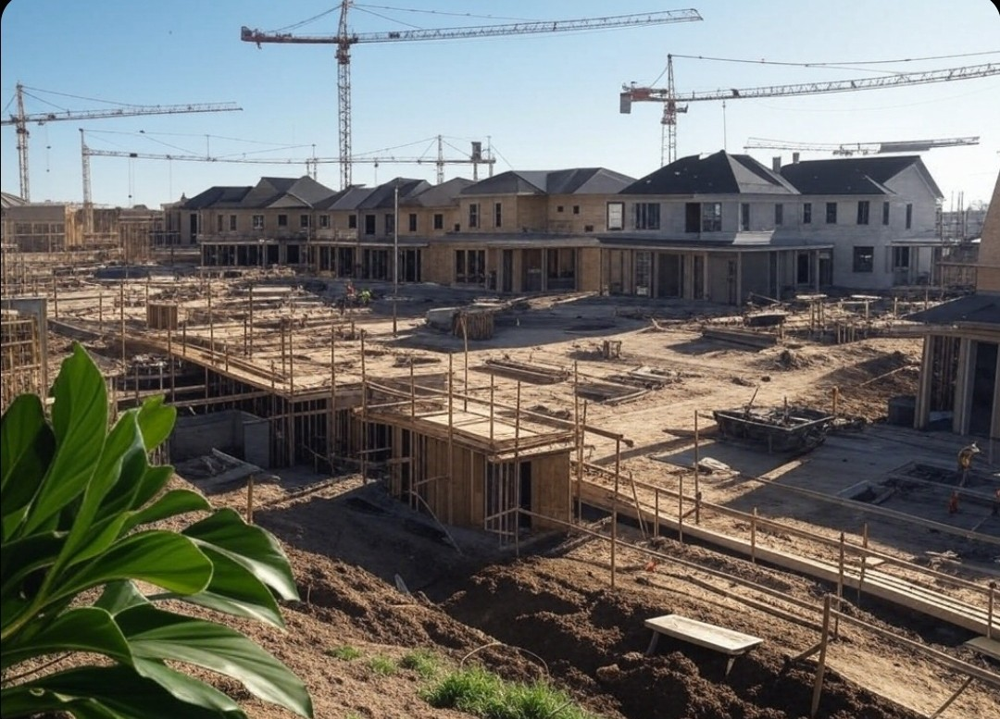
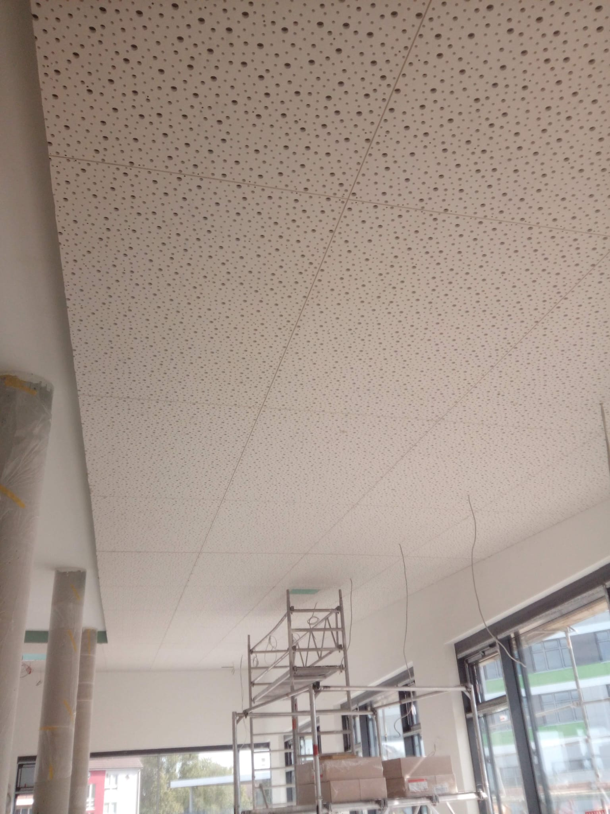
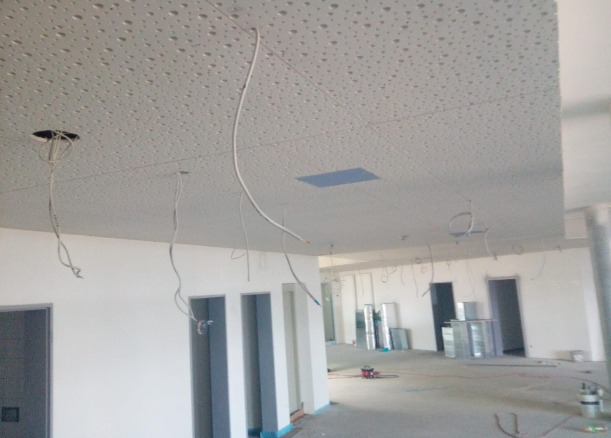
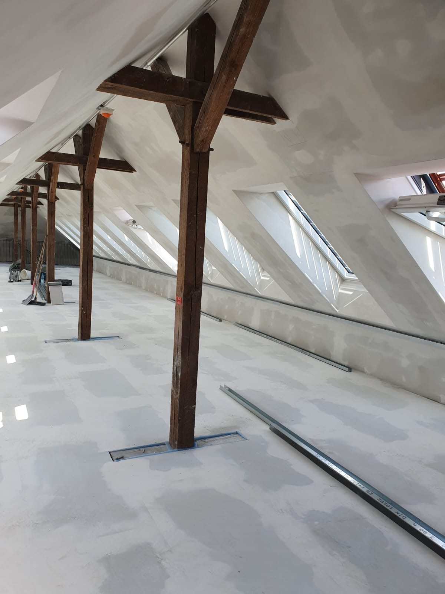
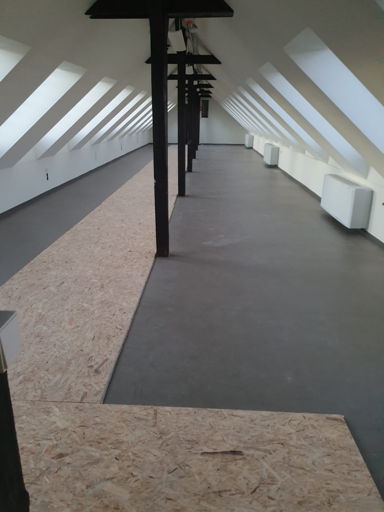

Građevinski radovi - Križevci
Knauf sustavi i adaptacije interijera
Mate Global d.o.o. izvodi gipskartonske radove, spuštene stropove, izolacije, gletanje, farbanje, sanaciju i obnovu prostora.
Zatražite ponudu
O nama
Tvrtka iz Križevaca specijalizirana za građevinske i završne radove s naglaskom na urednu, preciznu i kvalitetnu izvedbu.
- Precizna izvedba i uredan završetak
- Adaptacije, obnove i novi prostori
- Jasan dogovor i profesionalna komunikacija
- Radovi prilagođeni roku i budžetu
Što nudimo
Gipskartonske pregrade
Izrada i montaža pregradnih zidova.
Spušteni stropovi
Estetska i praktična rješenja za stropove.
Izolacija
Akustična i termo izolacija prostora.
Gletanje i farbanje
Priprema zidova i završno bojanje.
Adaptacije
Adaptacija i rušenje dijelova objekata.
Sanacija i obnova
Obnova postojećih prostora i interijera.
Galerija radova




Zatražite ponudu
Pošaljite upit s opisom radova i lokacijom. Mate Global d.o.o. - Križevci i okolica.
Pošalji email